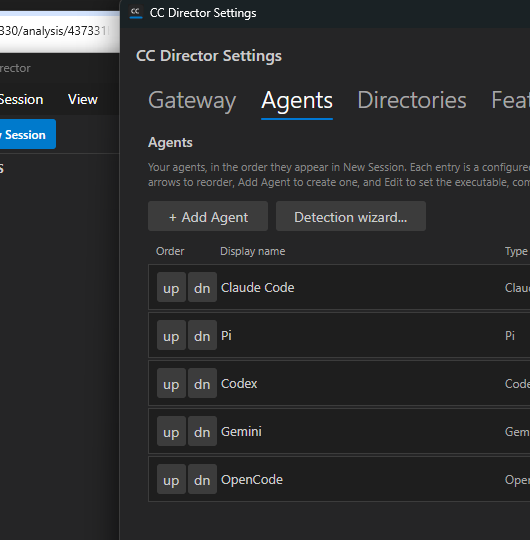
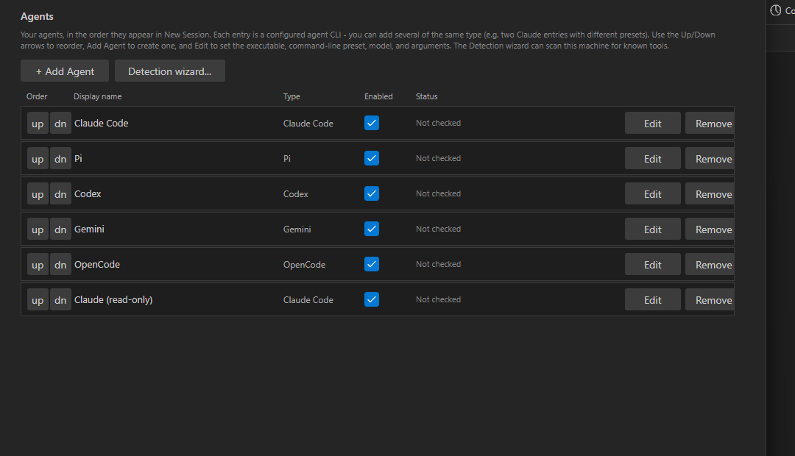
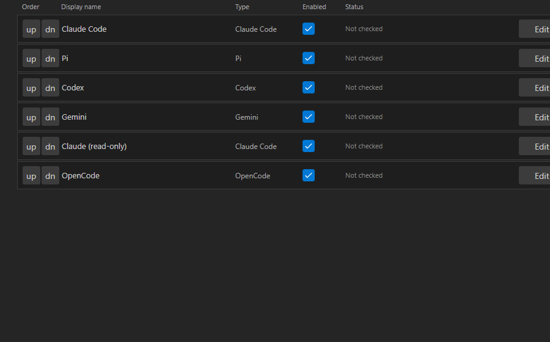
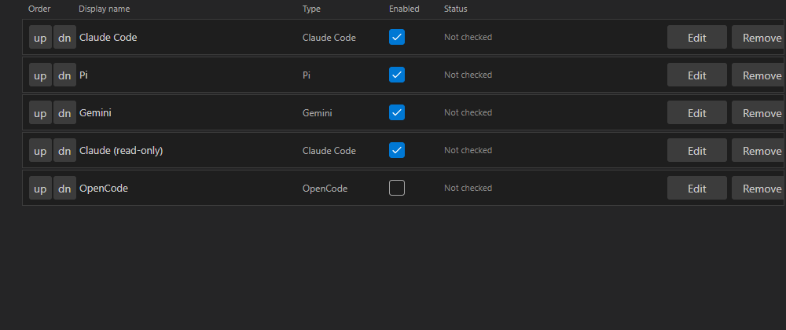
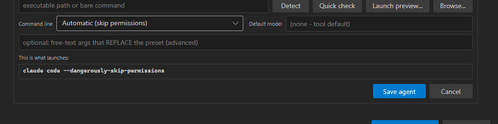
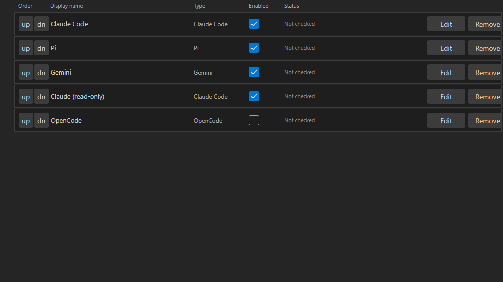
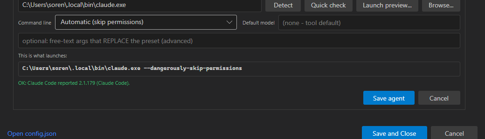

Title: [Settings] Agents become user-defined, ordered entries (CRUD list + config model + migration)
PR: #492 Branch: issue-489-agent-entries Verified by: QA Agent (independent session)
The QA Agent built the PR branch in its own worktree (D:\ReposFred\devthrottle-wt-489),
allocated isolated dev slot 9, and launched the test Director via a scheduled task with
CC_DIRECTOR_ROOT pointed at a throwaway config root pre-seeded with only the legacy
*_path keys (no agent.entries). The Settings > Agents UI was driven via Windows
UI Automation; every criterion was reproduced and screenshotted, and the on-disk config.json was
inspected for state proof. The Director's own binary/screenshots were NOT reused.
scripts\local-build-avalonia.ps1 -Slot 9 -> Build succeeded, 0 warnings, 0 errors.| # | Criterion | Expected | Actual | Result |
|---|---|---|---|---|
| 1 | Migration from legacy *_path -> ordered agent.entries (Claude, Pi, Codex, Gemini, OpenCode); legacy keys retained |
Settings shows 5 rows in that order; config grows an agent.entries array |
5 rows shown in exact order; agent.entries written with 5 entries each with a distinct GUID, seeded from the *_path values; legacy keys still present | PASS |
| 2 | Add a second claude-typed entry ("Claude (read-only)") | A 6th row appears; two ClaudeCode entries with distinct ids | Row "Claude (read-only)" (Type Claude Code) added; config has two ClaudeCode entries, ids 51f962ba... and 436d59c1... (distinct) | PASS |
| 3 | Up/Down reorder persists and survives reopen | Moved row's new position written to the array and shown after reopening | "Claude (read-only)" moved up past OpenCode; array order = Claude Code, Pi, Gemini, Claude (read-only), OpenCode; reopening the dialog shows the same order | PASS |
| 4 | Edit pre-fills; changing model/args updates only that entry | Editor opens pre-filled; only edited entry changes | Edit on Gemini opened pre-filled with its name + path; set model gemini-2.5-pro + args --yolo; only the Gemini entry changed, all others byte-identical | PASS |
| 5 | Remove deletes the entry; remaining keep order | Entry gone from list and array; order preserved | Codex removed; 5 entries remain in their relative order | PASS |
| 6 | Enabled checkbox toggles and persists per entry | Toggle persists to that entry | OpenCode toggled off -> "enabled": false; all others true; survives reopen | PASS |
| 7 | Detect / Quick check runs ToolDetectionService and updates Status / agent_status |
Flow runs; status updated and persisted | Quick check returned "OK: Claude Code reported 2.1.179 (Claude Code)."; agent_status.claude persisted with ok:true, version, path. Detect also resolved the tool. | PASS |
| 8 | Unrelated config sections unchanged after saving agents | gateway/screenshots byte-for-byte unchanged | gateway and screenshots identical before vs after all agent edits; legacy *_path retained | PASS |
"agent": {
"claude_path": "C:/qa/claude.exe",
"pi_path": "C:/qa/pi.exe",
"codex_path": "C:/qa/codex.exe",
"gemini_path": "C:/qa/gemini.exe",
"opencode_path": "C:/qa/opencode.exe"
}
"agent": {
"claude_path": "C:/qa/claude.exe", "pi_path": "...", "codex_path": "...", "gemini_path": "...", "opencode_path": "...",
"entries": [
{ "id": "51f962ba-...", "display_name": "Claude Code", "type": "ClaudeCode", "enabled": true },
{ "id": "8b0c95e7-...", "display_name": "Pi", "type": "Pi", "enabled": true },
{ "id": "379bbb89-...", "display_name": "Gemini", "type": "Gemini", "enabled": true,
"default_model": "gemini-2.5-pro", "args_override": "--yolo" }, // AC4 edit, only this entry
{ "id": "436d59c1-...", "display_name": "Claude (read-only)", "type": "ClaudeCode", "enabled": true,
"default_model": "sonnet" }, // AC2 second claude, distinct id
{ "id": "ac6e17b2-...", "display_name": "OpenCode", "type": "OpenCode", "enabled": false } // AC6
]
// Codex removed (AC5). Order = AC3 reorder. gateway/screenshots unchanged (AC8).
}
// top-level agent_status.claude = { ok:true, version:"2.1.179 (Claude Code)", ... } // AC7
AC1 - migrated list, 5 rows in order:

AC2 - second Claude entry "Claude (read-only)" coexists (6 rows):

AC3 - after reorder (Claude read-only moved up past OpenCode):

AC3 - order survives reopening the dialog:

AC4 - Edit editor opened pre-filled (Gemini), resolved-command preview:

AC5/AC6 - Codex removed; OpenCode Enabled unchecked:

AC7 - Quick check OK (green): "Claude Code reported 2.1.179":
